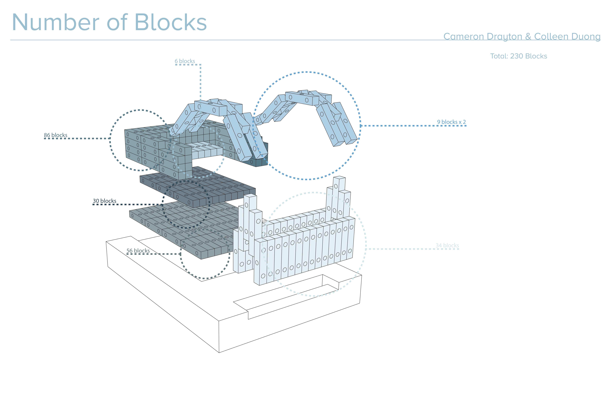
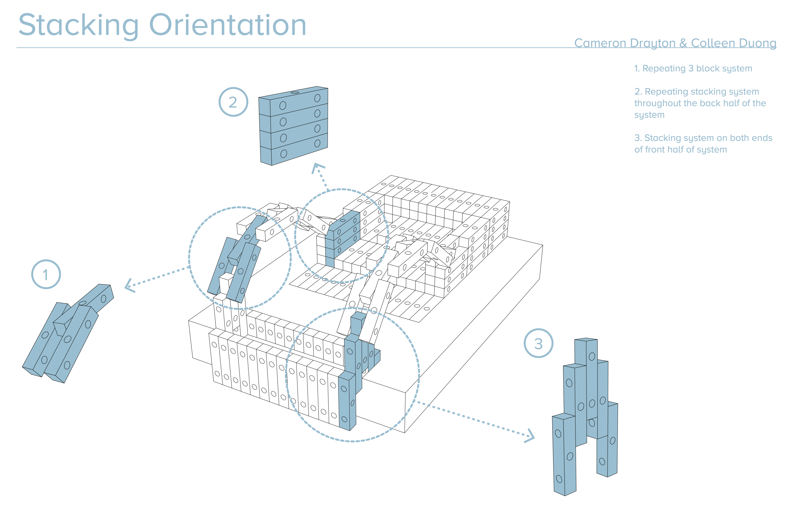
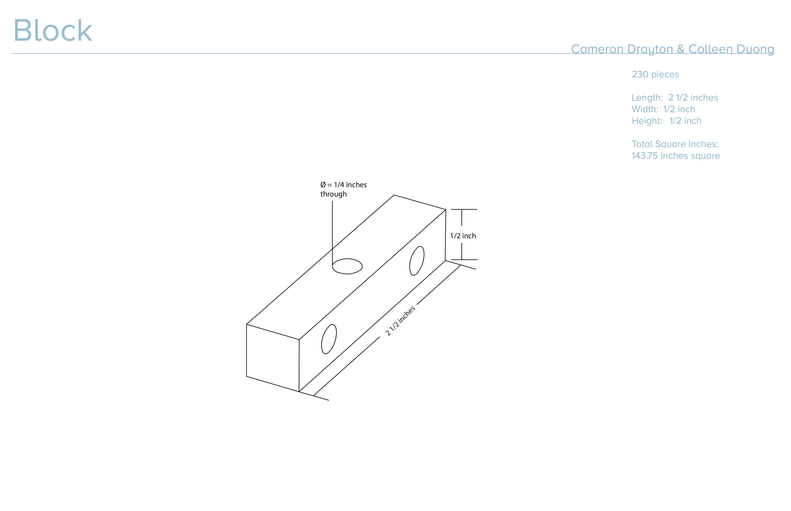
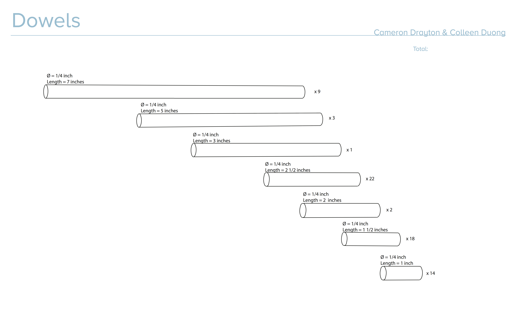
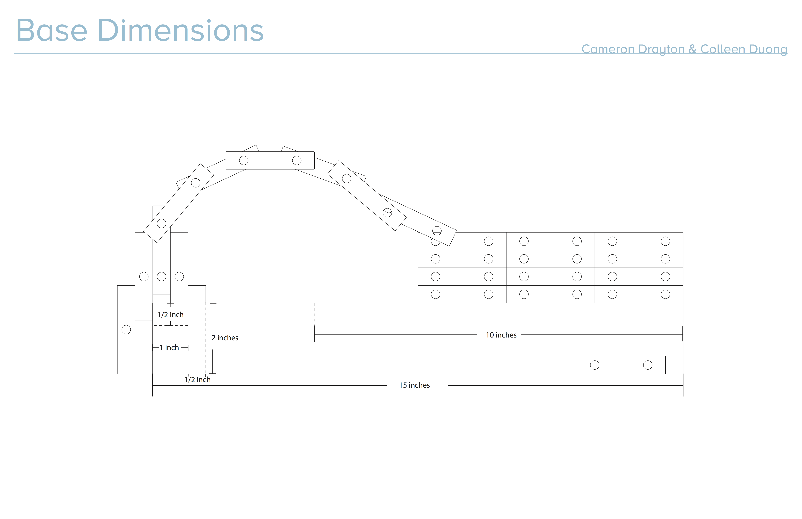
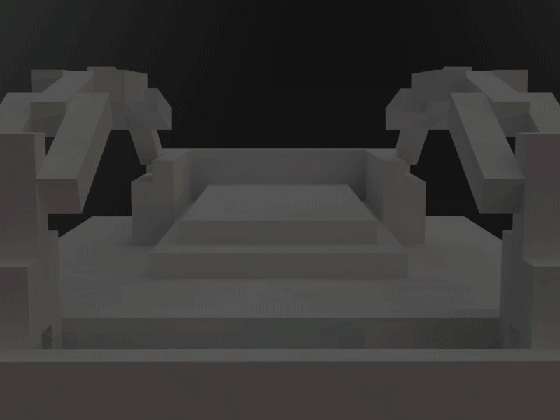
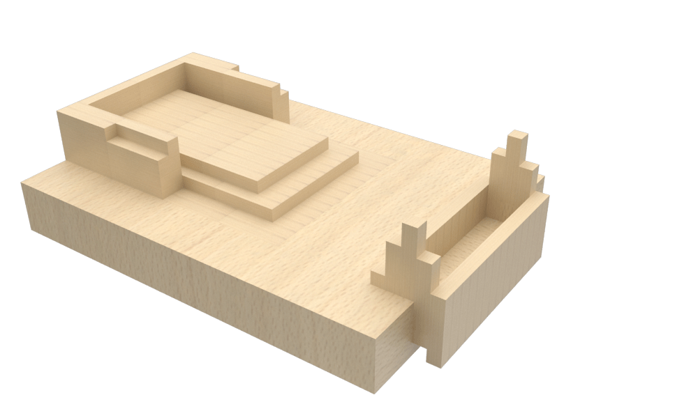

Motion Model
First Year Quarter 3 Project
Partner: Cameron Drayton
Students were assigned a kitchen tool that they had to study: the physical aspect of the tool and the motion of the tool. With their partners tool, pairs designed a structure that would incorporate both tool's motions.






